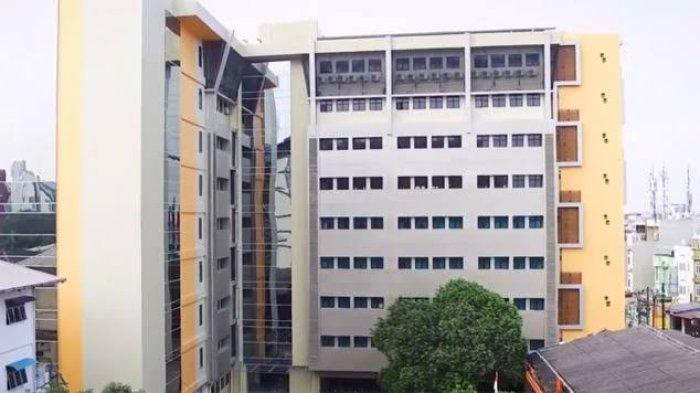

| SMP Santo Thomas 1 Medan adalah salah satu sekolah Katolik yang berada di Medan Petisah, Kota Medan. Sekolah ini merupakan salah satu sekolah dari 10 sekolah terbaik di kota Medan. |
SEJARAH |
Gedung SMP Swasta Santo Thomas 1 Medan (sebelumnya bernama SMP RK Medan) berdiri di Jl. S. Parman No. 109, Kelurahan Petisah Tengah, Kecamatan Medan Petisah, Kota Medan. Sekolah ini berdiri dari tahun 1948 – sekarang. Sekolah ini merupakan sekolah di bawah naungan YPK Don Bosco Keuskupan Agung Medan. |
|  | VISI: |
| "Komunitas pendidikan unggul dalam mewujudkan peserta didik yang memiliki akal budi, iman & cinta penuh kebaikan dalam semangat kolaborasi." | |
| MISI: | |
|